- WinEntry యాప్ గురించి
- యాప్ను ఇన్స్టాల్ చేయడం ఎలా?
- సైన్-ఇన్ అవ్వడం ఎలా?
- మొదటిసారి సెటప్ చేయడం (స్టార్టింగ్ గైడ్)
- హోమ్ స్క్రీన్ పరిచయం
- రోజువారీ స్టాక్ ఎంట్రీ (Daily Stock Entry)
- కొనుగోళ్లు (Purchases)
- రిపోర్టులు (Reports)
- ఐటమ్స్ / ప్రొడక్ట్స్
- సెట్టింగ్స్
- క్లౌడ్ డ్రైవ్ బ్యాకప్
- డేటా మేనేజ్మెంట్ & ఎక్సెల్ ఇంపోర్ట్/ఎక్స్పోర్ట్
- హెల్ప్ మరియు సపోర్ట్
1 WinEntry యాప్ గురించి
తెలుగు రాష్ట్రాల్లోని వైన్ షాపులు మరియు లిక్కర్ రిటైల్ వ్యాపారాల్లో ప్రతిరోజూ అవసరమయ్యే స్టాక్ అమ్మకము లెక్కింపు (Reconciliation) విధానాన్ని సులభతరం చేయడం కోసం సింహాద్రి సిస్టమ్స్ (Simhadri Systems) వారు ఈ యాప్ను స్వంత అవసరానికి ప్రత్యేకంగా డిజైన్ చేశారు. కేవలం వైన్ షాపులకే కాకుండా, వస్తువుల సంఖ్య (Units) ఆధారంగా స్టాకును లెక్క వేయగల ఏ రిటైల్ వ్యాపారానికైనా ఇది ఒక అద్భుతమైన ఇన్వెంటరీ మేనేజ్మెంట్ టూల్.
యాప్ ఏం చేస్తుంది?
వ్యాపారంలో అత్యంత కీలకమైన రోజువారీ "ఓపెనింగ్ ఇంకా క్లోజింగ్" బ్యాలెన్స్ లెక్కింపును WinEntry ఆటోమేటిక్గా చేస్తుంది.
- యూనిట్-లెవెల్ ట్రాకింగ్ — వివిధ రకాల బ్రాండ్లు, కేటగిరీలు మరియు రకరకాల సైజుల (బాటిళ్లు, కేసులు, ప్యాకెట్లు, బ్యాగులు మొదలైనవి) వారీగా స్టాక్ను మేనేజ్ చేయవచ్చు
- రోజువారీ లెక్కలు — ప్రతిరోజూ కొనుగోళ్లు, అమ్మకాలు మరియు ఖర్చులను నమోదు చేయడం ద్వారా, ఆ రోజుకు సంబంధించిన కచ్చితమైన స్టాక్ అమ్మకము, మిగిలిన షీట్ను తక్షణమే పొందవచ్చు
- ఆటోమేటిక్ సేల్స్ లెక్కింపు — ఓపెనింగ్ బ్యాలెన్స్ + కొనుగోళ్లు − క్లోజింగ్ బ్యాలెన్స్ = రోజువారీ అమ్మకం; యాప్ ప్రతి ప్రొడక్ట్ మరియు సైజుకు ఆటోమేటిక్గా లెక్కిస్తుంది
- పలు భాషల సపోర్ట్ — ప్రస్తుతానికి ఇది ఇంగ్లీష్ మరియు తెలుగు భాషల్లో అందుబాటులో ఉంది; అవసరమైతే ఇతర భారతీయ భాషల్లోకి కూడా సులభంగా మార్చుకోవచ్చు
- ప్రైవసీ డిజైన్ — మీ బిజినెస్ డేటా మీ ఫోన్ లోనే సురక్షితంగా ఉండటానికి ఇది పూర్తిగా ఇంటర్నెట్ లేకపోయినా (Offline) పనిచేస్తుంది; ఆప్షనల్ క్లౌడ్ బ్యాకప్ ద్వారా మాత్రమే డేటా బయటకు పంపబడుతుంది
- ఎక్సెల్ ఎక్స్పోర్ట్ (Excel Export) — తనిఖీల కోసం లేదా అకౌంటింగ్ కోసం ప్రతి రిపోర్టును ఎక్సెల్ ఫైల్ రూపంలో సేవ్ చేసుకోవచ్చు
ఇది ఎందుకు ఉపయోగపడుతుంది?
వ్యాపారుల అనుభవంతో తయారైనది. ఈ యాప్ లైసెన్స్ పొందిన వ్యాపారుల వాస్తవ అవసరాలను బట్టి peer-to-peer (సహచర వ్యాపారుల) ఫీడ్బ్యాక్తో డెవలప్ చేయబడింది.
తప్పులకు తావుండదు. కాగితాల మీద చేత్తో రాసేటప్పుడు జరిగే లెక్కల తప్పులను మరియు ఆర్థిక నష్టాలను ఈ డిజిటల్ లాగిన్ పూర్తిగా నివారిస్తుంది.
ఎలాంటి వ్యాపారానికైనా మార్చుకోవచ్చు. ఇది వైన్ రిటైల్ ట్రేడ్ కోసం డిజైన్ చేయబడినప్పటికీ, దీనిలోని లాజిక్ సహాయంతో డెయిరీ, హార్డ్వేర్ లేదా కాస్మెటిక్స్ వంటి ఏ రిటైల్ రంగంలోనైనా కోడింగ్ మార్చకుండానే వాడుకోవచ్చు.
బిజినెస్ యూజ్ కేసెస్ (ఉదాహరణలు)
| రంగం | వినియోగం |
|---|---|
| Licensed retailer (ప్రస్తుత deployment) | Brand మరియు pack size వారీగా bottles — రోజువారీ reconciliation మరియు regulatory reports |
| Dairy & Beverage | అధిక daily turnover గల crates మరియు individual bottles |
| Construction & Hardware | Cement bags, tile boxes, plumbing fixtures |
| Personal Care & Cosmetics | వివిధ sizes లో (ml / grams) అనేక brands |
| Pet Supply | Packaged food bags మరియు accessories by unit |
Size Codes (ప్రస్తుత retail deployment)
ప్రతి product కు గరిష్టంగా 5 size variants support చేస్తుంది. ప్రస్తుత licensed retail configuration లో ఇవి:
| Size Code | వివరణ | సాధారణ పరిమాణం | Case లో Units |
|---|---|---|---|
| Full / Big | 551–900 ml (సాధారణంగా 750 ml లేదా 650 ml Beer) | 12 per case | |
| Litre | 1000 ml (brand code కు "L" చేర్చడం ద్వారా) | 9 per case | |
| PP | Half / Pint | 201–550 ml (సాధారణంగా 375 ml లేదా Can Beer) | 24 per case |
| NN | Quarter / Nip | 101–200 ml (సాధారణంగా 180 ml) | 48 per case |
| DD | Dip / Miniature | ≤ 100 ml (సాధారణంగా 90 ml లేదా 60 ml) | 96 per case |
ఇతర రకాల వ్యాపారాలకు, ఆ deployment setup సమయంలో size codes మరియు వాటి వివరణలు configure చేయబడతాయి.
2 యాప్ను ఇన్స్టాల్ చేయడం ఎలా?
- మీ ఆండ్రాయిడ్ ఫోన్లో Google Play Store ఓపెన్ చేయండి
- సెర్చ్ బార్లో WinEntry లేదా WinEntry Simple Inventory అని టైప్ చేసి సెర్చ్ చేయండి
- Simhadri Systems అని ఉన్న రిజల్ట్పై క్లిక్ చేసి Install నొక్కండి
- ఇన్స్టాల్ అయిన తర్వాత Open బటన్ నొక్కండి
కనీస అవసరాలు: ఆండ్రాయిడ్ 8.0 (Oreo) లేదా ఆపై వెర్షన్ ఉండాలి · లాగిన్ అవ్వడానికి ఒక గూగుల్ అకౌంట్ అవసరం


3 సైన్-ఇన్ అవ్వడం ఎలా?
WinEntry యాప్ మీ Google Account (మీ Gmail లేదా YouTube కి వాడే అకౌంట్) ద్వారా లాగిన్ అవుతుంది.
- WinEntry యాప్ ఓపెన్ చేయగానే 'Sign In' స్క్రీన్ కనిపిస్తుంది
- Sign in with Google బటన్ పై క్లిక్ చేయండి
- మీ గూగుల్ అకౌంట్ను సెలెక్ట్ చేసుకోండి
- అడిగిన పర్మిషన్లను ఓకే చేయండి (క్లౌడ్ బ్యాకప్ కోసం మాత్రమే యాప్కు గూగుల్ షీట్స్ యాక్సెస్ అవసరమవుతుంది)
- ఇప్పుడు మీరు హోమ్ స్క్రీన్కి చేరుకుంటారు


4 మొదటిసారి సెటప్ చేయడం (Getting Started)
లాగిన్ అయిన తర్వాత, మొదటిసారి హోమ్ స్క్రీన్ పైన ఒక అంబర్ (ఆరెంజ్) రంగులో Getting Started కార్డ్ కనిపిస్తుంది. ఈ కార్డ్ని తాకి సెటప్ చెక్లిస్ట్ ఓపెన్ చేయండి.

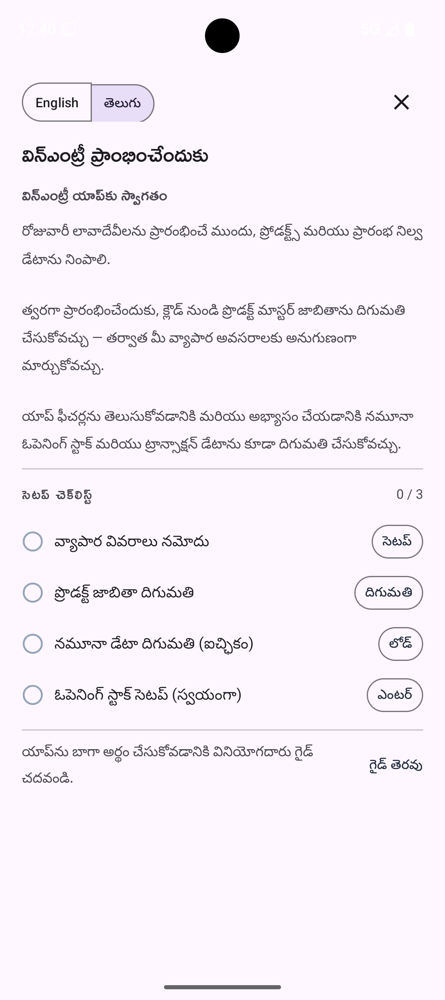
ఈ చెక్లిస్ట్లో 4 స్టెప్స్ ఉంటాయి. ఇందులో స్టెప్ 1 మరియు స్టెప్ 2 తప్పనిసరి. అలాగే స్టెప్ 3 లేదా స్టెప్ 4 లలో ఏదో ఒకటి పూర్తి చేస్తే ఈ కార్డ్ ఇక ముందు కనిపించదు; తరువాత మీరు రోజువారీ ఎంట్రీలు మొదలుపెట్టొచ్చు.
స్టెప్ 1 — బిజినెస్ సమాచారం (Business Info)
మీరు ఎక్స్పోర్ట్ చేసే అన్ని రిపోర్టుల పైన మీ షాప్ పేరు, యజమాని పేరు కనిపిస్తాయి.
- "Set Up Business Information" పక్కన Set Up తాకండి — Business Info screen తెరుచుకుంటుంది
- Fields పూరించండి:
- Owner Name — మీ పూర్తి పేరు
- Business Name (తప్పనిసరి) — మీ వ్యాపారం లేదా షాప్ పేరు
- Licence / Reg. No — మీ లైసెన్స్ నంబర్ (ఇది మీ ఫోన్ లోనే ఉంటుంది, ఎవరికీ షేర్ అవ్వదు)
- Address Lines 1 & 2, Location — షాప్ అడ్రస్ మరియు ఏరియా
- Phone — మీ 10 అంకెల మొబైల్ నంబర్
- Save & Register తాకండి
- Confirmation dialog లో admin కి share చేయబడే fields వివరిస్తుంది. Save & Register తాకి confirm చేయండి.
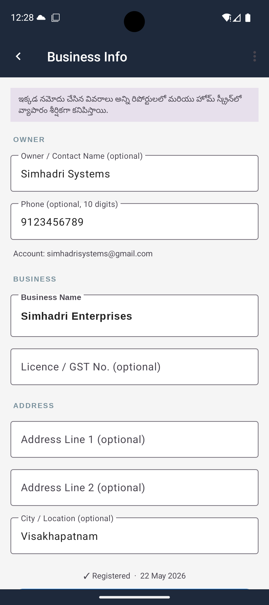
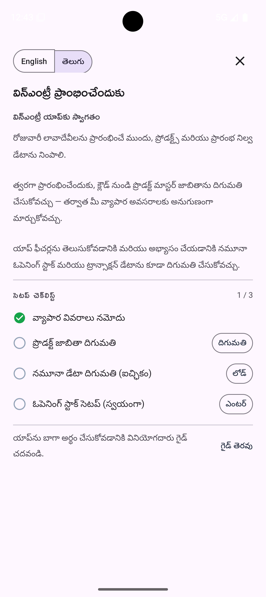
Save చేసిన తర్వాత checklist లో Step 1 పై green tick కనిపిస్తుంది. తదుపరి మార్పులకు button label "Save & Update Registration" గా మారుతుంది.
స్టెప్ 2 — ప్రొడక్ట్ లిస్ట్ డౌన్లోడ్ (Import Product List)
Admin యొక్క standard product master list (product codes, పేర్లు, sizes మరియు prices) మీ phone కి download చేస్తుంది.
- "Import Product List" పక్కన Download తాకండి
- Progress spinner కనిపిస్తుంది — connection speed బట్టి 5–30 seconds వేచి ఉండండి
- Complete అయిన తర్వాత green tick కనిపిస్తుంది
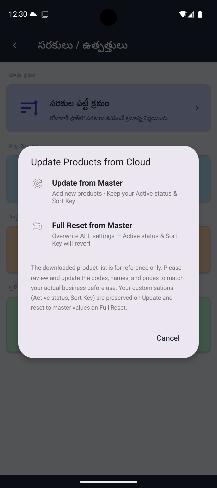

Download తర్వాత, Items/Products → Product Display Order కి వెళ్ళి products ని మీరు stock count చేసే క్రమంలో arrange చేయండి. ఇది daily closing entry వేగంగా చేయడానికి సహాయపడుతుంది.
ఇక్కడ set చేసిన order app అంతటా consistently కనిపిస్తుంది — Daily Stock Entry, Opening Stock మరియు అన్ని reports లో products ఈ sequence లో appear అవుతాయి. Reorder చేయడానికి: Product Display Order తాకి Edit switch on చేయండి, తర్వాత left వైపు drag handle తో rows move చేయండి లేదా ప్రతి product పక్కన ↑ ↓ nudge arrows తాకండి. పూర్తయినప్పుడు Renumber & Save తాకండి. Edit switch off చేసిన స్థితిలో ఏదైనా product row ని double-tap చేస్తే దాన్ని deactivate చేయవచ్చు — deactivated products Inactive section కి move అవుతాయి మరియు daily stock entry లో కనిపించవు.
స్టెప్ 3 — శాంపిల్ డేటాను లోడ్ చేయడం (ఆప్షనల్)
Sample data వల్ల real figures enter చేయడానికి ముందు app ని practice చేయవచ్చు. Dummy opening stock మరియు కొన్ని రోజుల transactions load అవుతాయి — అన్ని screens ని real data తో చూడవచ్చు.
- "Import Sample / Test Data (Optional)" పక్కన Load తాకండి
- Date picker తెరుచుకుంటుంది — sample data కు opening balance తేదీగా ఏ తేదీ కావాలో ఎంచుకోండి. Default: 7 రోజుల క్రితం.
- OK తాకండి — sample data background లో load అవుతుంది (10–30 seconds)


Load అయిన తర్వాత green tick కనిపిస్తుంది మరియు card "Trial setup complete — you're all set!" చూపిస్తుంది.
స్టెప్ 4 — ఓపెనింగ్ స్టాక్ సెటప్ (Setup Opening Stock)
Sample data కాకుండా real data తో start చేస్తున్నారంటే, ప్రారంభ inventory గా ప్రతి product మరియు size కి actual unit count enter చేయాలి. ఇది మొదటిసారి live వ్యాపారం ప్రారంభించేటప్పుడు ఒకసారి మాత్రమే చేస్తారు. రెండు పద్ధతులు ఉన్నాయి — మీకు అనుకూలమైనది ఎంచుకోండి.
ఏ పద్ధతి అయినా save చేసిన తర్వాత Step 4 పై green tick కనిపిస్తుంది. అన్ని required steps complete అయిన తర్వాత Getting Started card automatically మాయమవుతుంది.
చిన్న product lists కు suitable.
- "Setup Opening Stock (manual)" పక్కన Enter తాకండి
- Opening Stock Setup screen తెరుచుకుంటుంది
- పై భాగంలో మీ మొదటి trading తేదీ ఎంచుకోండి
- ప్రతి product కు size fields తాకి మీ దగ్గర ఉన్న unit count type చేయండి
- Size fields మరియు products మధ్య వేగంగా move చేయడానికి keyboard Next key వాడండి
- దిగువన SAVE తాకండి — confirm చేయడానికి ముందు total unit count చూపిస్తుంది


Opening stock figures ఇప్పటికే spreadsheet లో ఉంటే, లేదా product list పెద్దగా ఉంటే Excel import చాలా వేగంగా ఉంటుంది.
- "Setup Opening Stock (manual)" పక్కన Enter తాకి Opening Stock Setup screen తెరవండి
- ⋮ (కుడివైపు పై menu) → Download Template తాకండి
- App మీ phone Downloads folder లో pre-filled Excel file save చేస్తుంది. Template లో ప్రతి product కు ఒక row, ప్రతి size కు (L, QQ, PP, NN, DD) ఒక column ఉంటుంది. Product codes ముందే fill అయి ఉంటాయి — వాటిని మార్చకండి.
- Computer లో లేదా phone లో Google Sheets / Microsoft Excel లో template తెరవండి
- ప్రతి product మరియు size కు quantity columns లో opening stock counts enter చేయండి. ఆ size లేకపోతే blank వదలండి లేదా 0 enter చేయండి.
- File save చేసి phone కు transfer చేయండి (WhatsApp, Google Drive, email లేదా USB ద్వారా)
- Opening Stock Setup screen లో తిరిగి వచ్చి ⋮ → Import from Excel తాకండి
- Phone storage నుండి saved file ఎంచుకోండి
- App figures import చేసి import result summary చూపిస్తుంది (Section 12 చూడండి)


5 హోమ్ స్క్రీన్ పరిచయం
సెటప్ పూర్తయిన తర్వాత హోమ్ స్క్రీన్పై ఐదు ముఖ్యమైన కార్డులు కనిపిస్తాయి.
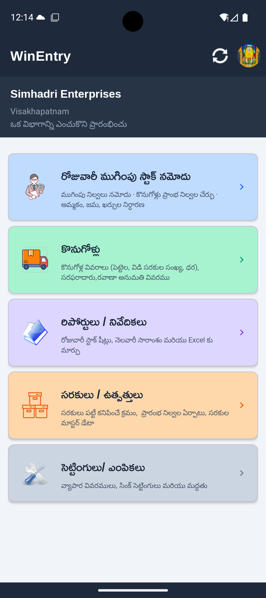
హెడర్ (టాప్ బార్)
| విభాగం | ఏమి చేస్తుంది |
|---|---|
| షాప్ పేరు & లొకేషన్ | స్క్రీన్ పైన కనిపిస్తుంది — Business Info నుండి తీసుకుంటుంది |
| క్లౌడ్/సింక్ ఐకాన్ (కుడివైపు పైన) | డేటాను క్లౌడులో బ్యాకప్ చేసుకోవడానికి దీన్ని నొక్కాలి. తెలుపు = అంతా సింక్ అయింది; రెడ్ = ఏదో లోపం ఉంది, మళ్లీ నొక్కండి; అంబర్ = బ్యాకప్ సెటప్ చేయలేదు |
| అకౌంట్ ఐకాన్ | మీ Google profile photo కనిపిస్తుంది. అకౌంట్ మార్చడానికి లేదా సైన్ అవుట్ అవ్వడానికి దీన్ని నొక్కవచ్చు |
మోడ్యూల్ కార్డ్స్
| కార్డ్ | ఏమి చేస్తుంది |
|---|---|
| రోజు వారి ముగింపు స్టాక్ నమోదు (Daily Closing Stock Entry) | రోజు ముగిసేసరికి స్టాక్ అమ్మకం పోను మిగిలి ఉన్న స్టాక్ వివరాలను ఎంటర్ చేయడానికి |
| Purchases | కొత్తగా వచ్చిన స్టాక్, సప్లయర్ ఇన్వాయిస్ వివరాలను రికార్డ్ చేయడానికి |
| Reports | డైలీ, మంత్లీ, R1 & R2 రిపోర్టులను చూడటానికి మరియు ఎక్సెల్లోకి మార్చడానికి |
| Items / Products | ప్రొడక్ట్ లిస్ట్ క్రమాన్ని కావలసిన విధంగా మార్చడానికి మరియు ఓపెనింగ్ స్టాక్ మేనేజ్ చేయడానికి |
| Settings | బిజినెస్ సమాచారం, భాష, బ్యాకప్ సెట్టింగ్స్ మార్చుకోవడానికి |
Module తెరవడానికి ఏదైనా card తాకండి. Home కి తిరిగి రావడానికి (module లోపల) back arrow లేదా phone back button వాడండి.
6 రోజువారీ స్టాక్ ఎంట్రీ (Daily Stock Entry)
ఇది మీరు ప్రతిరోజూ చేసే ముఖ్యమైన పని. రోజు ముగిసేసరికి షాపులో మిగిలిన స్టాక్ను లెక్కపెట్టి ఇందులో ఎంటర్ చేయాలి. సేల్స్ వివరాలను యాప్ ఆటోమేటిక్గా లెక్కిస్తుంది.
ఓపెనింగ్ బ్యాలెన్స్ + కొనుగోళ్లు − క్లోజింగ్ బ్యాలెన్స్ = రోజువారీ అమ్మకం
స్క్రీన్ ఓపెన్ చేయడం
హోమ్ స్క్రీన్ నుండి Daily Closing Stock Entry పై క్లిక్ చేయండి.

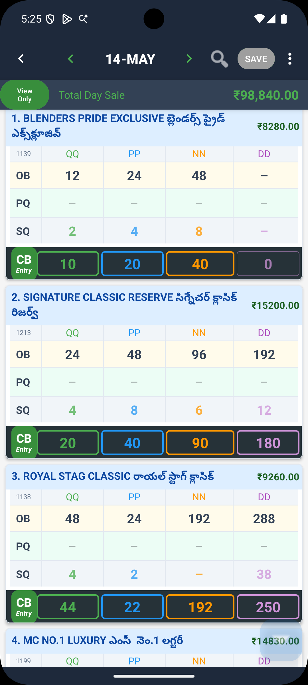
పైన controls:
- తేదీ: నేటి తేదీ డిఫాల్ట్గా ఉంటుంది. పైన తేదీని మార్చుకోవడానికి ‹ మరియు › బాణాలను వాడవచ్చు.
- CB Entry / View Only: డేటా ఎంటర్ చేయడానికి 'CB Entry' నొక్కాలి, కేవలం చూడటానికయితే 'View Only' లో ఉంచాలి.
క్లోజింగ్ బ్యాలెన్స్ ఎంటర్ చేయడం
- పైన ఉన్న CB Entry బటన్ నొక్కగానే ఎడిట్ మోడ్ ఓపెన్ అవుతుంది.
- ప్రతి ప్రొడక్ట్ లైన్ లోనూ ఆరోజు ఓపెనింగ్ బ్యాలెన్స్ (OB) మరియు పర్చేసెస్ (PQ) ఆటోమేటిక్గా కనిపిస్తాయి.
- Closing Balance (CB) కాలమ్లో మీరు లెక్కబెట్టిన ఫిజికల్ స్టాక్ నంబర్ను టైప్ చేయండి.
- మీరు టైప్ చేస్తున్నప్పుడే సేల్స్ క్వాంటిటీ (SQ) పక్కన మారిపోతూ ఉంటుంది. అమ్మకాల విలువ (ధరల ప్రకారం ఆటోమేటిక్గా లెక్కించబడుతుంది).
- అంతా అయిపోయాక పైన ఉన్న Save (గ్రీన్ టిక్) బటన్ నొక్కండి.


ఎక్సెల్ ద్వారా క్లోజింగ్ బ్యాలెన్స్ ఇంపోర్ట్ చేయడం
ప్రొడక్ట్స్ ఎక్కువగా ఉన్నప్పుడు, లేదా క్లోజింగ్ స్టాక్ ఇప్పటికే స్ప్రెడ్షీట్లో రికార్డ్ అయి ఉంటే, ఎక్సెల్ నుండి నేరుగా ఇంపోర్ట్ చేయడం వేగంగా ఉంటుంది.
- డైలీ స్టాక్ స్క్రీన్లో పైన కుడివైపు ⋮ → Download Closing Template నొక్కండి.
- డౌన్లోడ్ అయిన ఎక్సెల్ షీట్లో క్లోజింగ్ బ్యాలెన్స్ వివరాలను, ట్రేడింగ్ తేదీని నింపి సేవ్ చేయండి.
- యాప్లోకి వచ్చి ⋮ → Import Closing నొక్కి ఆ ఫైల్ను సెలెక్ట్ చేయండి. ఒకే ఎక్సెల్ ఫైల్ ద్వారా ఒకటి కంటే ఎక్కువ రోజుల డేటాను కూడా ఒకేసారి ఇంపోర్ట్ చేసుకోవచ్చు.


డే-ఎండ్ రికన్సిలియేషన్ (Day-End Reconciliation)
క్లోజింగ్ బ్యాలెన్స్ ఎంటర్ చేసాక, స్క్రీన్ కింది భాగానికి స్క్రోల్ చేస్తే రోజువారీ క్యాష్ లెక్కల సమ్మరీ కనిపిస్తుంది:
- Total Day Sales — మొత్తం అమ్మకాల విలువ (ధరల ప్రకారం ఆటోమేటిక్గా లెక్కించబడుతుంది).
- UPI Receipts — ఆ రోజు ఆన్లైన్/UPI ద్వారా వచ్చిన మొత్తం (₹).
- Day Expenses — ఆ రోజు జరిగిన చిల్లర ఖర్చులు (Petty Cash).
- Cash for Deposit — బ్యాంకులో వేయాల్సిన నగదు (Sales − UPI − Expenses రూపంలో ఆటోమేటిక్గా లెక్కించబడుతుంది).
- Cash Deposit — మీరు బ్యాంకులో లేదా గల్లా పెట్టెలో జమ చేసిన అసలు నగదు.
- Notes — ఏవైనా రిమార్కులు ఉంటే రాయవచ్చు.
వివరాలన్నీ నింపాక కింద ఉన్న Save బటన్ నొక్కి రోజువారీ లెక్కను లాక్ చేయండి. తప్పులు ఉంటే మళ్లీ ఎడిట్ చేసి సేవ్ చేయవచ్చు, పాత డేటా స్థానంలో కొత్తది సేవ్ అవుతుంది.

Daily Stock Menu (⋮ కుడివైపు పైన)
| మెనూ ఆప్షన్ | ఏమి చేస్తుంది |
|---|---|
| Export Daily Stock | పూర్తి స్టాక్ షీట్ను ఎక్సెల్గా ఎక్స్పోర్ట్ చేయండి |
| Export Current Date | నేటి డేటాను మాత్రమే ఎక్సెల్గా ఎక్స్పోర్ట్ చేయండి |
| Export Date Range | ఒక తేదీ పరిధిలోని డేటాను ఎక్సెల్గా ఎక్స్పోర్ట్ చేయండి |
| Download Closing Template | క్లోజింగ్ బ్యాలెన్స్ ఇంపోర్ట్ కోసం ఎక్సెల్ టెంప్లేట్ డౌన్లోడ్ చేయండి |
| Import Closing | ఎక్సెల్ ఫైల్ నుండి క్లోజింగ్ బ్యాలెన్స్ ఇంపోర్ట్ చేయండి |
| Restore from Cloud | క్లౌడ్ నుండి డైలీ స్టాక్ డేటా తీసుకోండి |
| Clear Current Date | ఎంచుకున్న తేదీ ఎంట్రీలు మాత్రమే డిలీట్ చేయండి |
| Clear ALL Daily Stock | అన్ని డైలీ స్టాక్ డేటా డిలీట్ చేయండి ("DELETE ALL" అని టైప్ చేసి కన్ఫర్మ్ చేయాలి) |
సెర్చ్
డైలీ స్టాక్ స్క్రీన్లో ఉండగా ప్రొడక్ట్ పేరు లేదా కోడ్ ద్వారా ఫిల్టర్ చేయడానికి పైన సెర్చ్ ఐకాన్ తాకండి.
సేవ్ చేయని మార్పులు
సేవ్ చేయకుండా వేరే చోటికి వెళ్ళినా లేదా తేదీ మార్చినా, యాప్ అడుగుతుంది: Save Now / Discard / Keep Editing. మీరు డిస్కార్డ్ చేసే వరకు డేటా సురక్షితంగా ఉంటుంది.
7 కొనుగోళ్లు (Purchases)
షాపుకి వచ్చిన ప్రతిసారీ స్టాక్ వివరాలు, ఇన్వాయిస్ వివరాలను ఇక్కడ రికార్డ్ చేయాలి. ఇవి ఆ రోజు స్టాక్ లెక్కల్లో పర్చేసెస్గా ఆటోమేటిక్గా ఓపెనింగ్ కు యాడ్ అవుతాయి.
పర్చేస్ లిస్ట్
హోమ్ స్క్రీన్లో Purchases నొక్కితే ఇప్పటివరకు ఉన్న ఇన్వాయిస్ల లిస్ట్ కనిపిస్తుంది.


- కొత్త ఇన్వాయిస్ యాడ్ చేయడానికి పైన ఉన్న + గుర్తును నొక్కండి.
- పాత ఇన్వాయిస్ను ఎడిట్ చేయడానికి లేదా డిలీట్ చేయడానికి దానిపై డబుల్ ట్యాప్ (రెండుసార్లు నొక్కడం) చేయండి.
- ప్రొడక్ట్ పేరు, కోడ్, తేదీ లేదా ఇన్వాయిస్ నంబర్ ద్వారా వెతకడానికి పైన సెర్చ్ బార్ వాడండి.
పర్చేస్ ఎంట్రీ చేయడం
+ నొక్కగానే పర్చేస్ ఫామ్ ఓపెన్ అవుతుంది.


ఇన్వాయిస్ వివరాలు (పైన)
Invoice No, Reference No, సప్లయర్ పేరు మరియు డేట్ ఎంటర్ చేయండి.
ప్రొడక్ట్ వివరాలు (కింద)
- Select Product నొక్కి వస్తువును ఎంచుకోండి.
- వచ్చిన స్టాక్ను Cases (పూర్తి బాక్సులు) మరియు Loose (విడి బాటిళ్లు) లలో విడివిడిగా ఎంటర్ చేయండి. ధర ఆటోమేటిక్గా వస్తుంది, కావాలంటే మార్చుకోవచ్చు.
- ఒకే ఇన్వాయిస్లో మరికొన్ని ప్రొడక్ట్స్ యాడ్ చేయడానికి Add Another Product నొక్కండి.
- అంతా అయ్యాక Save నొక్కండి.
పర్చేస్ ఎడిట్ లేదా డిలీట్ చేయడం
లిస్ట్లో ఏదైనా పర్చేస్ను డబుల్-ట్యాప్ చేస్తే Edit, Delete లేదా Insert Here ఆప్షన్లతో యాక్షన్ డైలాగ్ తెరుచుకుంటుంది. డిలీషన్స్ పర్మనెంట్ అవుతాయి మరియు ఆ తేదీ డైలీ స్టాక్ టోటల్స్ వెంటనే అప్డేట్ అవుతాయి.
అదే ఇన్వాయిస్లో మల్టిపుల్ ఐటమ్స్ చేర్చడం
పర్చేసెస్ లిస్ట్లో ఇప్పటికే ఉన్న పర్చేస్ను డబుల్-ట్యాప్ చేసి Insert Here ఎంచుకోండి. అదే ఇన్వాయిస్ నంబర్, తేదీ మరియు సప్లయర్తో ముందే నింపబడిన కొత్త పర్చేస్ ఫామ్ తెరుచుకుంటుంది — ప్రొడక్ట్ మాత్రమే మార్చండి.
ఎక్సెల్ నుండి పర్చేసెస్ ఇంపోర్ట్ చేయడం
చాలా ప్రొడక్ట్స్తో డెలివరీ వచ్చినప్పుడు లేదా పాత ఇన్వాయిస్లను ఒకేసారి ఎంటర్ చేయాల్సి వచ్చినప్పుడు, ఎక్సెల్ ద్వారా ఇంపోర్ట్ చేయడం వేగంగా ఉంటుంది.
- పర్చేసెస్ స్క్రీన్లో ⋮ → Download Template తాకండి.
- డౌన్లోడ్ అయిన ఎక్సెల్ టెంప్లేట్లో ప్రతి ఇన్వాయిస్కు తేదీ, ఇన్వాయిస్ నంబర్, సప్లయర్, ప్రొడక్ట్ కోడ్, Cases, Loose మరియు Price వివరాలు నింపండి.
- ఒకే ఫైల్లో అనేక ఇన్వాయిస్లు ఎంటర్ చేయవచ్చు — ప్రతి డెలివరీకి వేరే Invoice No వాడండి.
- ఫైల్ సేవ్ చేసి ఫోన్కు ట్రాన్స్ఫర్ చేయండి.
- పర్చేసెస్ స్క్రీన్లో ⋮ → Import from Excel తాకి ఫైల్ సెలెక్ట్ చేయండి.

Purchases Menu (⋮ కుడివైపు పైన)
| మెనూ ఆప్షన్ | ఏమి చేస్తుంది |
|---|---|
| Import from Excel | ఎక్సెల్ ఫైల్ నుండి పర్చేసెస్ బల్క్-ఇంపోర్ట్ చేయండి (ముందు టెంప్లేట్ డౌన్లోడ్ చేయండి) |
| Export All | అన్ని పర్చేస్ రికార్డులను ఎక్సెల్గా ఎక్స్పోర్ట్ చేయండి |
| Export Filtered | ఒక తేదీ పరిధిలో పర్చేసెస్ ఎక్స్పోర్ట్ చేయండి |
| Download Template | మీ ప్రొడక్ట్ లిస్ట్తో ముందే నింపబడిన ఎక్సెల్ టెంప్లేట్ పొందండి |
| Delete by Date Range | ఒక తేదీ పరిధిలో అన్ని పర్చేసెస్ డిలీట్ చేయండి |
| Multi-Select | ఒకేసారి డిలీట్ చేయడానికి మల్టిపుల్ పర్చేసెస్ సెలెక్ట్ చేయండి |
| Download from Cloud | క్లౌడ్ నుండి పర్చేస్ డేటా తీసుకోండి |
8 రిపోర్టులు (Reports)
హోమ్ స్క్రీన్ నుండి Reports కార్డ్ నొక్కితే రకరకాల రిపోర్టులు కనిపిస్తాయి.
Daily Stock Sheet
ఒక నిర్దిష్ట రోజున అన్ని ప్రొడక్ట్స్ యొక్క ఓపెనింగ్, పర్చేస్, క్లోజింగ్ మరియు సేల్స్ వివరాల పూర్తి టేబుల్. దీన్ని Export to Excel ద్వారా సేవ్ చేసుకోవచ్చు.
- Daily Stock Sheet తాకండి
- తేదీ ఎంచుకోండి
- View Report తాకండి
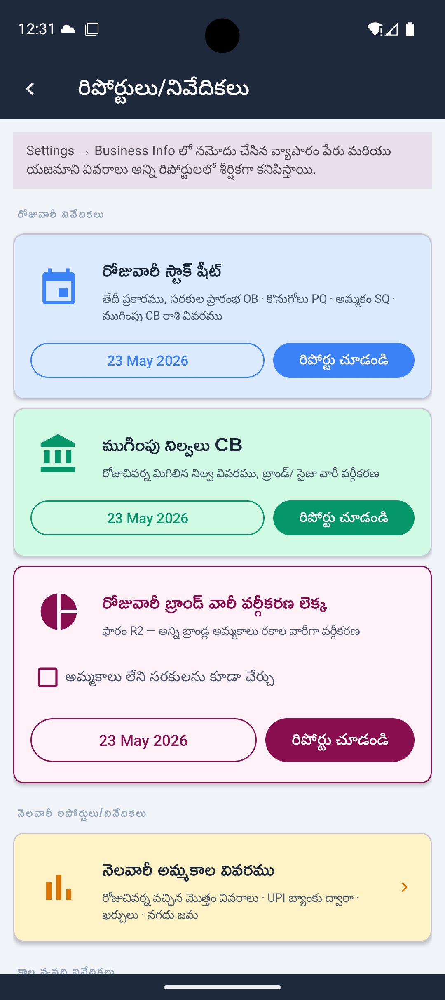

- బిజినెస్ పేరు, యజమాని పేరు మరియు తేదీ రిపోర్ట్ హెడర్లో కనిపిస్తాయి (Business Info నుండి)
- షీట్ను Downloads కు సేవ్ చేయడానికి Export to Excel (కుడివైపు పైన) తాకండి
Closing Balances
కేవలం ఆ రోజు మిగిలిన స్టాక్ క్వాంటిటీల వివరాలు. ఫిజికల్ వెరిఫికేషన్ కోసం వాడుకోవచ్చు.
Daily Brand Wise Account
బ్రాండ్ల వారీగా, కేటగిరీల వారీగా అమ్మకాల సమ్మరీ. ప్రభుత్వ నివేదికల (Regulatory Compliance) కోసం ఇది ఉపయోగపడుతుంది.
- Daily Brand Wise A/c తాకండి
- తేదీ ఎంచుకోండి
- View Report తాకండి
- అవసరమైతే ఎక్సెల్కి ఎక్స్పోర్ట్ చేయండి

Purchase Report (Period)
ఒక నిర్దిష్ట కాలంలో (ఉదాహరణకు ఒక వారంలో లేదా నెలలో) వచ్చిన అన్ని ఇన్వాయిస్ల వివరాలు.
- Purchase Report తాకండి
- From మరియు To తేదీలు ఎంచుకోండి
- View Report తాకండి
Monthly Sale Data
ఒక నెలలోని ప్రతి రోజు యొక్క సేల్స్ అమౌంట్, UPI కలెక్షన్, ఖర్చులు మరియు క్యాష్ డిపాజిట్ వివరాల మంత్లీ సమ్మరీ. లోపాలున్న రోజులు ఇందులో కలర్ కోడింగ్ ద్వారా (అంబర్ రంగులో) హైలైట్ అవుతాయి.
- Monthly Sale Data తాకండి
- ◀ మరియు ▶ బాణాలతో నెలలు నావిగేట్ చేయండి, లేదా నెల పేరు తాకి ఏ నెల/సంవత్సరానికైనా జంప్ చేయండి
డే-ఎండ్ రికన్సిలియేషన్ సేవ్ కాని రోజులు అంబర్ రంగులో * మార్కర్తో హైలైట్ అవుతాయి. క్లోజింగ్ బ్యాలెన్స్ రికన్సిలియేషన్ తర్వాత అప్డేట్ అయిన రోజులు రిఫ్రెష్ ఐకాన్తో మార్క్ అవుతాయి. కాలమ్ టోటల్స్ కిందన కనిపిస్తాయి; నెగెటివ్ అయితే రెడ్లో చూపిస్తాయి.
| Monthly Summary Menu (⋮) | ఏమి చేస్తుంది |
|---|---|
| Share | రిపోర్ట్ను కలర్-కోడెడ్ HTML ఫైల్గా షేర్ చేయండి |
| Print / Save as PDF | ఫోన్ ప్రింట్ సర్వీస్ ద్వారా ప్రింట్ చేయండి లేదా PDF గా సేవ్ చేయండి |
| Import Reconciliation from Cloud | క్లౌడ్ నుండి డే-ఎండ్ డేటా తీసుకోండి |
| Delete Reconciliation Range | ఒక తేదీ పరిధిలో డే-ఎండ్ రికార్డులు రిమూవ్ చేయండి |
Monthly Stock Purchases
ఎంచుకున్న నెలలో ప్రతి ప్రొడక్ట్కు మొత్తం కొనుగోళ్ల క్వాంటిటీలు, ఒక ప్రొడక్ట్కు ఒక row.
Zero-Activity Products చేర్చడం
రిపోర్టులలో స్టాక్ లేని (Zero-Activity) ప్రొడక్ట్స్ కనిపించకుండా ఉండటానికి "Include products with zero activity" స్విచ్ను ఆఫ్ చేసి ఉంచవచ్చు. డిఫాల్ట్గా ఆఫ్లో ఉంటుంది.
9 ప్రోడక్ట్ / సరకుల జాబితా
ఇక్కడ ప్రొడక్ట్స్ యొక్క మాస్టర్ డేటాను మరియు వాటి డిస్ప్లే ఆర్డర్ను మేనేజ్ చేయవచ్చు.
Product Display Order సరకుల పట్టీ క్రమం
మీ షాపులో రాక్లలో బాటిళ్లు అమర్చిన క్రమం ప్రకారం ప్రొడక్ట్స్ వరుసను మార్చుకోవచ్చు.
- Product Display Order తాకండి.
- ఎడిట్ మోడ్లోకి వెళ్ళడానికి Edit switch టోగుల్ చేయండి.
- ఏదైనా ప్రొడక్ట్ను పైకి లేదా కిందికి మార్చడానికి Long-press చేసి drag చేయండి.
- Edit Order switch ఆఫ్ చేసి ప్రొడక్ట్ row ను డబుల్-ట్యాప్ చేస్తే Deactivate ఆప్షన్ వస్తుంది (డైలీ స్టాక్ నుండి దాచి, కింద Inactive సెక్షన్కి మూవ్ చేస్తుంది). Inactive ప్రొడక్ట్ను డబుల్-ట్యాప్ చేసి Re-activate చేయండి.
- పూర్తయినప్పుడు Renumber & Save తాకండి, లేదా Discard తో క్యాన్సెల్ చేయండి.
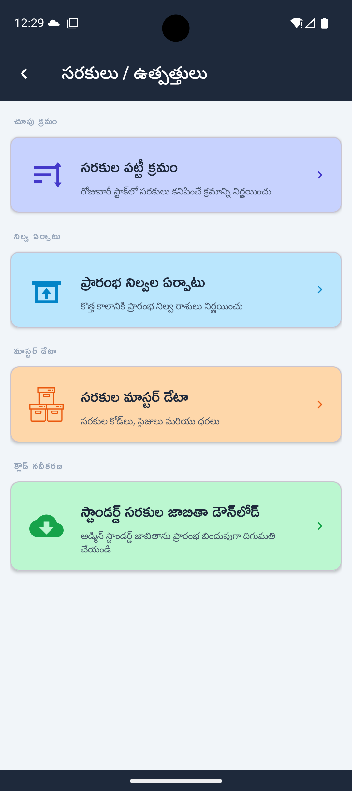

Opening Stock Setup ప్రారంభ నిల్వల ఏర్పాటు
కొత్త అకౌంట్ పీరియడ్ మొదలుపెట్టేటప్పుడు లేదా ప్రారంభ క్వాంటిటీలు సరిచేసేటప్పుడు వాడతారు. పూర్తి వివరాల కోసం Section 4 — Step 4 చూడండి.
- Opening Stock Setup తాకండి.
- తేదీ ఎంచుకుని Begin Entry లేదా Edit తాకండి.
- కీబోర్డ్ వాడి ప్రతి ప్రొడక్ట్కు సైజు వారీగా యూనిట్ కౌంట్ ఎంటర్ చేయండి.
- కిందన SAVE తాకండి.
- Opening Stock Setup → ⋮ → Download Template తాకండి.
- కంప్యూటర్లో టెంప్లేట్లో స్టాక్ క్వాంటిటీలు నింపండి.
- ఫైల్ను ఫోన్కు ట్రాన్స్ఫర్ చేయండి.
- ⋮ → Import from Excel తాకి ఫైల్ సెలెక్ట్ చేయండి.
Product Master List ప్రోడక్ట్ మాస్టర్ లిస్ట్
రిఫరెన్స్ కోసం మీ పూర్తి ప్రొడక్ట్ లిస్ట్ — ప్రొడక్ట్ కోడ్లు, పేర్లు మరియు సైజు వేరియంట్స్ — చూపిస్తుంది.

Standard Product List Download చేయడం
అడ్మిన్ కొత్తగా ఏవైనా బ్రాండ్లను యాడ్ చేసినా లేదా ధరలు మార్చినా, ఇక్కడికి వచ్చి డౌన్లోడ్ చేసుకోవాలి. దీనివల్ల మీ పాత డిస్ప్లే ఆర్డర్ ఏమాత్రం మారదు.
- Download Standard Product List తాకండి.
- డౌన్లోడ్ కన్ఫర్మ్ చేయండి.
- పూర్తయ్యే వరకు వేచి ఉండండి — కొత్త మరియు అప్డేటెడ్ ప్రొడక్ట్స్ యాడ్ అవుతాయి; మీ డిస్ప్లే ఆర్డర్ అలాగే ఉంటుంది.
10 సెట్టింగ్స్
Home screen నుండి Settings తాకండి.
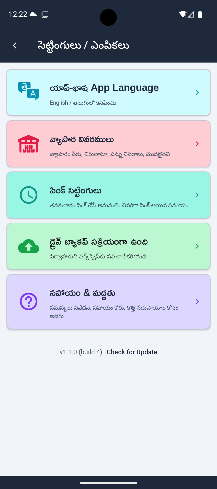
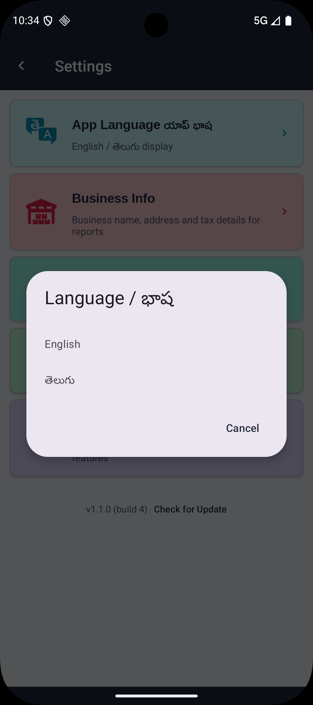
Language
యాప్ భాషను ఇంగ్లీష్ లేదా తెలుగులోకి మార్చుకోవడానికి App Language తాకండి. మార్పు వెంటనే అన్ని స్క్రీన్లకు అప్లై అవుతుంది.
Business Info
మీ షాప్ పేరు, ఫోన్ నంబర్ అప్డేట్ చేయడానికి. ఇక్కడి నుండే అకౌంట్ మరియు డేటాను పూర్తిగా డిలీట్ (Delete Account & Data) చేయవచ్చు.
- Changes ని admin's system కు sync చేయడానికి Save & Update Registration తాకండి
Business Info overflow menu (⋮ కుడివైపు పైన)
| మీ స్టేటస్ | మెనూ ఆప్షన్ | ఏమి చేస్తుంది |
|---|---|---|
| Registered | Delete Account & Data | అన్ని క్లౌడ్ డేటా, రిజిస్ట్రేషన్ మరియు సైన్-ఇన్ అకౌంట్ పర్మనెంట్గా రిమూవ్ చేస్తుంది |
| Not registered | Clear Local Data | ఈ డివైస్ నుండి అన్ని ఇన్వెంటరీ డేటా డిలీట్ చేస్తుంది (ఎక్స్పోర్ట్ చేసిన ఎక్సెల్ ఫైల్స్ ప్రభావితం కావు) |
| Deletion pending | Complete Account Deletion | రీ-లాగిన్ తర్వాత సైన్-ఇన్ అకౌంట్ రిమూవ్ కంప్లీట్ చేస్తుంది |
Drive Backup
క్లౌడ్ బ్యాకప్ ఆన్ చేయడానికి. పూర్తి వివరాల కోసం Section 11 చూడండి.
Sync Settings
Drive Backup యాక్టివ్ అయినప్పుడు మాత్రమే అందుబాటులో ఉంటుంది. యాప్ ఆటోమేటిక్గా ప్రతి 6 గంటలకు సింక్ చేయాలా లేదా Sync బటన్ నొక్కినప్పుడు మాత్రమే సింక్ చేయాలా అని కాన్ఫిగర్ చేయండి.
Help & Support
యాప్ టీమ్కు ఈమెయిల్ పంపడానికి లేదా సమస్యలను రిపోర్ట్ చేయడానికి.
- Report an Issue / Ask for Help — డివైస్ మరియు యాప్ వెర్షన్ ముందే నింపబడిన సపోర్ట్ ఈమెయిల్ పంపుతుంది
- Request Feature — Simhadri Systems కు ఫీచర్ రిక్వెస్ట్ పంపుతుంది
- Import Test Data — శాంపిల్ డేటా లోడ్ చేస్తుంది (రిజిస్ట్రేషన్ అవసరం)
- User Guide — ఈ గైడ్ను బ్రౌజర్లో తెరుస్తుంది
Error Log
యాప్లో ఏదైనా ఎర్రర్ వస్తే, డివైస్లో లాగ్ సేవ్ అవుతుంది. ఎర్రర్లు ఉంటే Settings కిందన Share Error Log బటన్ కనిపిస్తుంది. సపోర్ట్ సంప్రదించేటప్పుడు లాగ్ షేర్ చేయండి.
App Version
Settings కిందన చూపిస్తుంది. Play Store లో కొత్త వెర్షన్ చెక్ చేయడానికి Check for Update తాకండి.
11 క్లౌడ్ డ్రైవ్ బ్యాకప్
ఇది పూర్తిగా ఆప్షనల్. ఆన్ చేయకపోతే డేటా ఫోన్లోనే ఉంటుంది. ఆన్ చేస్తే మీ డేటా సురక్షితంగా క్లౌడ్లో సేవ్ అవుతుంది. మీ ఫోన్లో పొరపాటున డిలీట్ అయితే క్లౌడ్ నుండి డౌన్లోడ్ చేసుకోవచ్చు.
ఎలా ఆన్ చేయాలి?
- Settings → Drive Backup కి వెళ్లి Request Drive Backup నొక్కాలి.
- నియమ నిబంధనలు చదివి I Agree — Enable Backup నొక్కాలి.
- అడ్మిన్ మీ అకౌంట్ను యాక్టివేట్ చేయగానే క్లౌడ్ బ్యాకప్ యాక్టివ్ అవుతుంది.
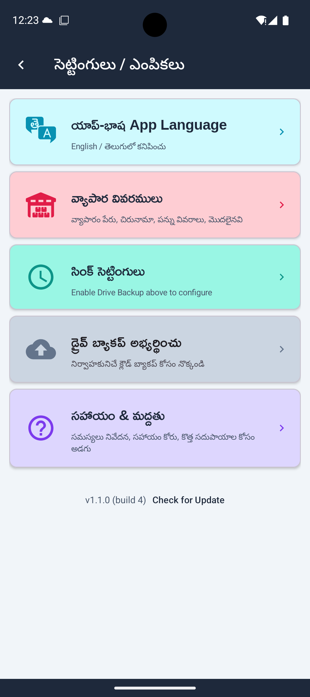
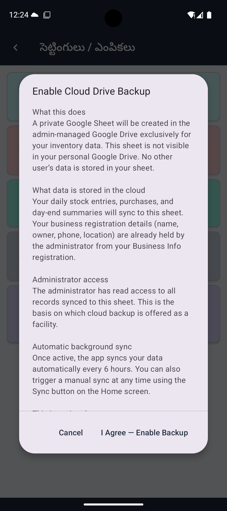
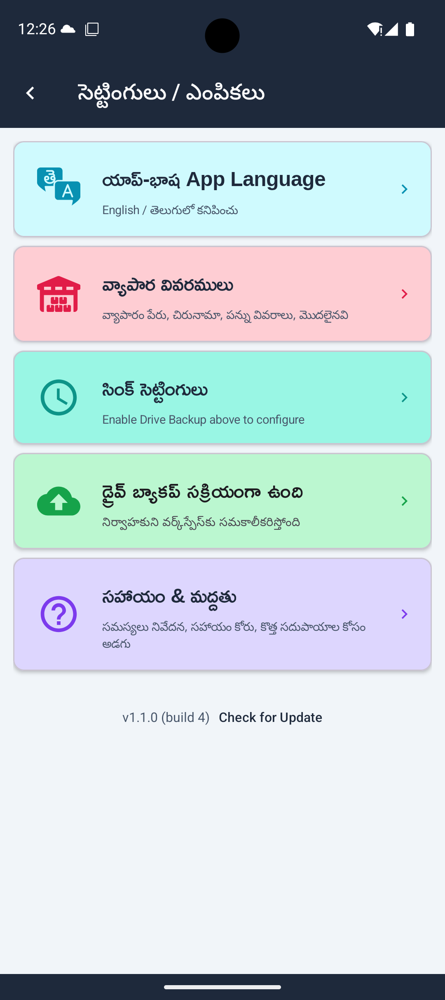
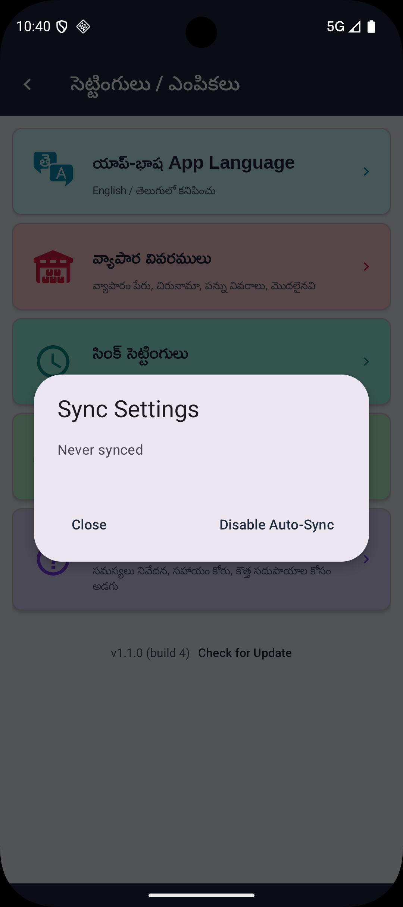
ఏమి Sync అవుతుంది
| డేటా | Sync అవుతుందా? |
|---|---|
| Daily stock entries | అవును |
| Purchase records | అవును |
| Day-end reconciliation | అవును |
| Opening stock | అవును |
| Product list | అడ్మిన్ నుండి read-only డౌన్లోడ్ మాత్రమే |
| Licence/Reg. number, పూర్తి address | కాదు — డివైస్లో మాత్రమే ఉంటుంది |
హోమ్ స్క్రీన్లో Sync Status Icons
| Icon రంగు | అర్థం |
|---|---|
| తెలుపు (White) | అన్ని records విజయవంతంగా sync అయ్యాయి |
| రెడ్ (Red) | ఒకటి లేదా అంతకు ఎక్కువ records fail అయ్యాయి — మళ్లీ నొక్కండి |
| అంబర్/కాషాయం (Amber) | Drive Backup setup కాలేదు |
Viewer vs Editor Role
| Role | మీరు ఏమి చేయగలరు |
|---|---|
| Editor (default) | పూర్తి యాక్సెస్ — డేటా ఎంటర్ చేయడం, అప్ మరియు డౌన్ సింక్, అన్ని బటన్లు యాక్టివ్ |
| Viewer | Read-only — క్లౌడ్ నుండి మాత్రమే సింక్ డౌన్; డేటా ఎంట్రీ మరియు సేవ్ బటన్లు హిడన్ |
Role మార్పు అవసరమైతే అడ్మిన్ను సంప్రదించండి.
డీయాక్టివేట్ లేదా డిలీట్ చేయడం
- Deactivate — Settings → Drive Backup (active) → Deactivate. భవిష్యత్తు ఆటో-సింక్ ఆగిపోతుంది. లోకల్ డేటా ప్రభావితం కాదు.
- Delete Account & Data — Settings → Business Info → ⋮ → Delete Account & Data. అన్ని క్లౌడ్ డేటా, రిజిస్ట్రేషన్ మరియు సైన్-ఇన్ అకౌంట్ పర్మనెంట్గా రిమూవ్ అవుతాయి.
12 డేటా మేనేజ్మెంట్ & ఎక్సెల్ ఇంపోర్ట్/ఎక్స్పోర్ట్
యాప్లోని అన్ని రిపోర్టులు మరియు ఎంట్రీలను ఎక్సెల్ (.xlsx) ఫైల్స్ రూపంలో డౌన్లోడ్ చేసుకోవచ్చు మరియు అప్లోడ్ చేయవచ్చు. అన్ని operations standard .xlsx files వాడతాయి — Microsoft Excel, Google Sheets లేదా ఏ compatible spreadsheet app లోనైనా తెరుచుకుంటాయి.
ఎక్సెల్ ఎక్స్పోర్ట్ — క్విక్ రిఫరెన్స్
ఎక్స్పోర్ట్ చేసిన ఫైల్స్ ఫోన్లోని Downloads ఫోల్డర్కు సేవ్ అవుతాయి. ఎక్స్పోర్ట్ తర్వాత Share బటన్ ద్వారా WhatsApp, ఈమెయిల్ లేదా ఏ యాప్ ద్వారానైనా నేరుగా షేర్ చేయవచ్చు.
| ఏమి ఎక్స్పోర్ట్ చేయాలి | ఎక్కడ దొరుకుతుంది | గమనికలు |
|---|---|---|
| డైలీ స్టాక్ పూర్తి షీట్ | Daily Stock → ⋮ → Export Daily Stock | ఎంచుకున్న తేదీలో అన్ని ప్రొడక్ట్స్, అన్ని సైజులు |
| క్లోజింగ్ బ్యాలెన్స్ (ఒకే తేదీ) | Daily Stock → ⋮ → Export Current Date | రోజు ముగింపు స్టాక్ స్నాప్షాట్ కోసం ఉపయోగకరం |
| డైలీ స్టాక్ (తేదీ పరిధి) | Daily Stock → ⋮ → Export Date Range | From మరియు To తేదీలు ఎంచుకోండి |
| అన్ని కొనుగోళ్లు | Purchases → ⋮ → Export All | రికార్డ్ చేసిన ప్రతి ఇన్వాయిస్ |
| కొనుగోళ్లు (తేదీ పరిధి) | Purchases → ⋮ → Export Filtered | From మరియు To తేదీలు ఎంచుకోండి |
| మంత్లీ సమ్మరీ | Reports → Monthly Sale Data → ⋮ → Share | కలర్-కోడెడ్ HTML లేదా Print ద్వారా PDF |
ఎక్సెల్ ఇంపోర్ట్ — ఎలా పని చేస్తుంది
ప్రతి డేటా టైప్కు ఇంపోర్ట్ సిస్టమ్ ఒకే మూడు-స్టెప్ పద్ధతి ఫాలో చేస్తుంది:
యాప్ లోపల ఉన్న Download Template బటన్ ద్వారా మాత్రమే ఎక్సెల్ ఫైల్ను డౌన్లోడ్ చేయాలి. సొంతంగా కొత్త ఫైల్స్ క్రియేట్ చేయకూడదు.
ఆ టెంప్లేట్ ఫైల్ను ఓపెన్ చేసి, కేవలం డేటా కాలమ్స్ మాత్రమే నింపి సేవ్ చేయాలి. ప్రొడక్ట్ కోడ్లు మార్చకూడదు. .xlsx గా save చేయండి.
ఆ ఫైల్ను ఫోన్లోకి తెచ్చుకుని యాప్లో ⋮ → Import ఆప్షన్ ద్వారా సెలెక్ట్ చేయాలి. ఇంపోర్ట్ పూర్తయిన తర్వాత ఎన్ని రికార్డులు కొత్తగా వచ్చాయి (New), ఎన్ని స్కిప్ అయ్యాయి (Skipped), ఎన్ని ఫెయిల్ అయ్యాయి (Failed) అనే సమ్మరీ స్క్రీన్ పై కనిపిస్తుంది.
ఎక్సెల్ ఇంపోర్ట్ — క్విక్ రిఫరెన్స్
| Import చేయాల్సింది | Template ఎక్కడ దొరుకుతుంది | Import ఎక్కడ చేయాలి |
|---|---|---|
| Opening stock | Products → Opening Stock → ⋮ → Download Template | Products → Opening Stock → ⋮ → Import from Excel |
| Closing balances | Daily Stock → ⋮ → Download Closing Template | Daily Stock → ⋮ → Import Closing |
| Purchases | Purchases → ⋮ → Download Template | Purchases → ⋮ → Import from Excel |
- ఓపెనింగ్ స్టాక్ ఇంపోర్ట్ — Section 4 (Step 4, Option B) మరియు Section 9
- క్లోజింగ్ బ్యాలెన్స్ ఇంపోర్ట్ — Section 6 (ఎక్సెల్ ద్వారా క్లోజింగ్ బ్యాలెన్స్ ఇంపోర్ట్)
- పర్చేస్ ఇంపోర్ట్ — Section 7 (ఎక్సెల్ నుండి పర్చేసెస్ ఇంపోర్ట్)
ఇంపోర్ట్ రిజల్ట్ సమ్మరీ
| రిజల్ట్ | అర్థం |
|---|---|
| New | రికార్డులు విజయవంతంగా ఇంపోర్ట్ అయ్యాయి |
| Skipped | ఇప్పటికే ఉన్నాయి — సేమ్ ప్రొడక్ట్ + తేదీ, లేదా సేమ్ ఇన్వాయిస్ + తేదీ. మార్పు చేయబడలేదు. |
| Failed | ప్రొడక్ట్ కోడ్ కనుగొనబడలేదు, లేదా డేటా ఫార్మాట్ ఎర్రర్ |
స్కిప్ లేదా ఫెయిల్ అయిన rows లిస్ట్ను క్లిప్బోర్డ్కి కాపీ చేయడానికి Copy List తాకండి. సరిచూసుకుని మళ్లీ ఇంపోర్ట్ చేయండి.
13 హెల్ప్ మరియు సపోర్ట్
యాప్లో ఏదైనా సమస్య వస్తే Settings → Help & Support కి వెళ్లి మద్దతు పొందవచ్చు.
సపోర్ట్ ఈమెయిల్: simhadrisystems@gmail.com
సపోర్ట్ కోసం సంప్రదించడం
Ask for Help లేదా Report Issue తాకండి. యాప్ మీ వెర్షన్, ఆండ్రాయిడ్ వెర్షన్ మరియు డివైస్ మోడల్తో మెసేజ్ టెంప్లేట్ ముందే నింపుతుంది. డేటా ఆటోమేటిక్గా పంపబడదు.
సాధారణ సమస్యలు — పరిష్కారాలు
| సమస్య | ఏమి చేయాలి |
|---|---|
| డౌన్లోడ్ కావడం లేదు / Request Access అని వస్తోంది | అడ్మిన్ ఇంకా అనుమతి ఇవ్వలేదు, యాప్లోని బటన్ నొక్కి అడ్మిన్కు రిక్వెస్ట్ పంపండి |
| "Drive Backup Pending" ఒక రోజు కంటే ఎక్కువ కాలం ఉంది | Card తాకి → Send Reminder |
| హోమ్ స్క్రీన్లో సింక్ ఐకాన్ రెడ్ కలర్లో ఉంది | మీ ఇంటర్నెట్ కనెక్షన్ చెక్ చేసి, ఆ ఐకాన్ పై మరోసారి క్లిక్ చేయండి |
| ఓపెనింగ్ బ్యాలెన్స్ తప్పుగా చూపిస్తోంది | నిన్నటి రోజు డే-ఎండ్ రికన్సిలియేషన్ కరెక్ట్గా సేవ్ అయిందో లేదో Daily Stock లో ఒకసారి చెక్ చేసుకోండి |
| Daily stock list లో product లేదు | Items/Products → Download Standard Product List run చేయండి |
| "Account Not Activated" error వస్తోంది | Email లేదా WhatsApp ద్వారా అడ్మిన్ను contact చేయండి |
| Account deletion తర్వాత "Sign in again to complete" చూపిస్తోంది | Sign out చేసి same account తో sign in చేసి Business Info → ⋮ → Complete Account Deletion కి వెళ్ళండి |
టెస్ట్ డేటా ఇంపోర్ట్ చేయడం
Settings → Help & Support → Import Test Data కి వెళ్ళండి. ప్రాక్టీస్ కోసం శాంపిల్ ఓపెనింగ్ బ్యాలెన్స్ మరియు డమ్మీ స్టాక్ డేటా లోడ్ అవుతుంది. యాప్ రిజిస్ట్రేషన్ అవసరం.
శాంపిల్ ఓపెనింగ్ బ్యాలెన్స్ తేదీ కన్ఫర్మ్ చేయండి. నిజమైన వ్యాపారం మొదలుపెట్టడానికి రెడీ అయినప్పుడు శాంపిల్ డేటాను నిజమైన వివరాలతో రీప్లేస్ చేయండి.